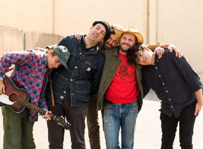

I think about two years ago I had some friends over around Christmas, and my friend Alex
told me to play this song. I don’t think I was prepared for the song to be as good as it is.
Personally, I think it is a nice change from other typical Christmas music, even though it
doesn’t convey the same feelings. The artists on the song are very diverse which explains
why it is a much less known song.
Likes:
I like “Christmas in Harlem”. It uses decent imagery of the Winter and has a pretty great
beat and the Kanye feature is definitely the main draw of the song. I think the beat,
accompanied by simple drums and piano save the song. The lyrics are also easy to remember
and aren’t rushed rap which is nice. It almost makes you relaxed which is why I can enjoy it.
Dislikes:
Because Kanye’s feature is the main reason why I like this song, it doesn’t fully “do it for
me”. I only like the beginning of the song and over time have liked it less and less. I can’t
say I’m overly enthusiastic about “Christmas in Harlem”. I feel like if Kanye had more verses
it would round out the song but I feel like he comes in really strong in the beginning of the
song and it slowly falls off which leaves me feeling bored. When I first heard this song, I
probably would have given it a 5 or 6 but over time, I have liked it less and less as I have
listened to more and more Kanye which is just on a higher level.
Likes:
In
Dislikes:
The
Heart it Races - 4/10
by Dr.Dog
Once again Dr. Dog comes through with the ideal Indie Song. I still have yet to explore
the discography of the band mainly because there is just so much music out by them, but
I hope to one day soon. I think that, while I do love “Where’d All the Time Go?”,
“The Heart it Races” is easier to listen to on loop, but both have that hearty old indie feel.
Likes:
I love the intro to this song, starting with raw vocals and clapping which then pass
off the song to the rest of the band and the chorus of multiple instruments. I think
the pitch of the vocals fits perfectly with the guitar and the drums aren’t
overwhelming. It’s balanced very well and I don’t see myself getting tired of it
after months of having it on my playlist. I feel like when I listen to the song I
see a soft yellow color like the one on the album cover, which may sound stupid, but
this is my website with my reviews.
Dislikes:
My dislikes are few and far between. As I have been writing this review I don’t
think the song is a 10 simply because the verse doesn’t change the backing beat
which can be a little repetitive. I would 100% give it a listen, and am comfortable
ranking this high up on my list of Indie songs of all time.
Likes:
In
Dislikes:
The
Sanctuary - 7/10
by Joji
Joji to many is a music artist, but to me he is also a hilarious youtuber named Filthy
Frank who quit youtube to pursue his music career. I was shocked when I made the
connection between the two sides of Joji because his music is actually respectable. I
found this album to be very enjoyable and listened to it for the first time when I was
painting my bathroom. Odd story, I know, but it was perfect because my mind was blank
and I was emotionally hit by the album and felt what Joji was saying. He followed this
release with a virtual concert that I didn’t attend because it didn’t make sense in my
mind to pay to watch a concert when you lose out on the in person experience, but I regret it.
The video below is an editor edition of the extravaganza concert if you want to take a look.
Likes:
I liked the majority of the songs on the album starting with “MODUS” which is a great
song. I find it hard to describe Joji’s music because it is experimental, but at the
same time makes complete sense. “Tick Tock” is probably my favorite song on the album
because the main beat draws out throughout the chorus, but then stops and drops. It
feels like you are on a roller coaster as the song pulls you up slowly and then gradually
drops you a bit. “Upgrade” has beautiful piano music which I admire. I love it when
other instruments are brought into music like instruments from the brass family or piano.
The song is really light and I like that the album plays with sadness and happiness
interchangeably. “Gimme Love” was partially ruined by Tik Tok and over use, but I really
like the middle of the song when the fast paced beat just stops and then there is this
overwhelming chorus sound of Joji singing and it makes you feel like you are floating in
space. I probably sound like I’m high but continuing.... “Pretty Boy” is one of my
favorites also because I like the way the beat repeats. I'm repetitively getting faster
which is coupled by fast drums and a good Lil Yachty feature. “Normal People” is also a
great song because the beat and production is perfectly intertwined with the lyrics.
Sometimes the 808’s hit at the perfect spot and they do in this song. “Mr. Hollywood” is
a sad song about Joji wanting to be with his girl and things not working out and it really
hit me the first time I listened to it. I think that his independence and deviance from
what the general public wants to do makes him an appealing figure to me and I want
him to get the girl in the end. You know what I mean? “Like You Do” is a sad breakup song
and I think the murmured piano is a great way to convey how Joji felt and then he sings
in the first verse around a minute into the song and it is magical.
Dislikes:
“Afterthought” isn’t bad but it certainly isn’t my taste. Sometimes Joji can get very
experimental and unless he uses strong drums or base I usually don’t end up liking it.
“777” has a lot of potential but I think the drop had a lot of potential and it didn’t
drop the whole way. “Reanimator” is another weird song and although I like the second
half, the first 1 minute and 30 seconds are a waste of space. Even in the second half
I feel like the beat is just a little too experimental and airy for me. I like this
album a lot, but I feel like there is wasted time in songs and it takes away from the
whole project as a whole which is why I gave it a 7/10.
Likes:
In
Dislikes:
The
Man on the Moon III - 9/10
by Kid Cudi
To prepare myself to listen to this album, starting at 9:50 at night, I
listened to Man on the Moon 1 then immediately after, Man on the Moon 2 which perfectly aligned with
the release of Man on the Moon 3. I put my noise canceling Beat Studio 3’s on, put my phone down just sat
and listened. Kid Cudi created art and I haven’t been able to stop listening to it. I even made my dad
listen to it with me, and he enjoyed it.
Likes:
I liked a lot of the songs on this album, starting with “Tequila Shots”,
which is my favorite song off the album. The synth sounds, floaty beat centered
by drums, and Cudi’s magical humming and vocals make it irresistible to not
bounce your head. The next song “Another Day” initially was not my favorite, but
after my third time listening to the album I have come around and now really
enjoy the beat and lyrics. Cudi’s deep voice couples really well with his beats
and I think this song specifically varies the beat and vocals perfectly. “Dive”
has a great beat, but I think there are better songs on the album. “Damaged” and
“Heaven on Earth” are perfect songs for the gym but I wouldn’t listen just for
pleasure on my day to day. “Mr.Solo Dolo III” is another favorite from the album
and I like how the beat is mellow which fits my music taste. “Elsie’s Baby
Boy(flashback)” samples “The House of the Rising Sun” by the Animals which I can
appreciate. “The Void” is another great song in my opinion as the song almost
drops you into the void of the song when Cudi starts with his melodic humming
and then the beat comes in abruptly. “Lord I Know” has a really cool distorted
beat and was my dad’s favorite song on the album. Every time I listen to this
album I like it more and more and keep adding songs to my playlists.
Dislikes:
There were very few songs that I disliked on this album and the list gets
smaller and smaller each time I listen to it. The three exceptions to this rule
are “Beautiful Trip”, “She Knows This”, and “Rockstar Nights” with Trippie
Redd. I find that “Beautiful Trip” sets the scene for the album, but doesn’t
contribute to the overall album. When you listen to it in order, it creates some
hype but I would never add it to a playlist. “She Knows This” just has a weird
beat with off tempo strong 808 hits that contrast strongly with the other
melodic songs on the album. Cudi’s vocals are almost the same song but the beat
is too atrocious to recover from. Lastly, “Rockstar Nights” feels more like a
Trippie Redd song than a Kid Cudi song and the same goes for “Show Out” which is
literally a Pop Smoke song in the album and absolutely doesn’t belong in the
album. I like Pop Smoke, but I think all of his songs sound the same and that’s
a hot take. Although I have problems with this album, I had to rate it near
perfect because I haven’t enjoyed an album this much in a long time.
Likes:
In
Dislikes:
The
Cinematic Sounds - 6/10
by Homesick Locations
For a new young band, releasing new music is often uncoordinated and not
fully developed, but Homesick Locations is an exception to that trend. I know
two members of the band, Ethan Bauman and Hayden Sirpis who are both lifelong
musicians. I’ve heard them play on their own, but was blown away by their first
EP. I am so beyond proud to know some of the band members and I hope that they
get more exposure as time goes on. They are trying to reach 5 thousand streams
before December 31st, so PLEASE listen! UPDATE: They hit their goal of over 5K streams
there will be a solo song release in January!
As a whole I think the EP is diverse in sound and I think that the vocals
have real feelings behind them. “Wassup” has my favorite progression in the EP
as the song picks up gradually and the echoing of vocals has a really great
effect. “Mr.Miller Lite” is so airy accompanied by some great guitar soloing.
The vocals are my favorite on the whole project and the verse starting at one
minute is impressive for the first project released by Homesick Locations.
“Pineapple Fanta” is a very fun song with classic pop indie music that reminds
me of the band Wallows. I like the way that the vocals work with the rest of the
song. There is no doubt in my mind that I would eat up any more music released
by Homesick Locations, and I think that the band has real potential to blow up
especially in this era of music because of social media’s influence on the
success of bands.
Dislikes:
There are only a few knit-picky dislikes I
have about the album. I think a little less distortion on some of the vocals
could do a lot in “Wassup” and I could do without the metronome sounding claves
in the start of the “Mr. Miller Lite”, but at the same time I like them at
certain times in the song. My main dislike of this EP is that it’s so short and
I want more! Please, please, please go listen and share with a friend. With
decent exposure I think this band could really go places.
Likes:
In
Dislikes:
The
Chanel - 10/10
by Frank Ocean
As previously mentioned, Frank Ocean is the father of pop rap. I think that he is the most widely
respected artist which is best shown by Rex Orange County’s refusal to cover his music. Ocean is
a musical genius and “Chanel” was the first song that I listened to. I think that to interpret any
of Frank Ocean’s music for someone else is a sin and for that reason I’ll let you go on to my
review of this absolute piece of art.
Likes:
I think that the main allure of this song is it’s lyrics. Right out of the gate Ocean sings, “My guy
pretty like a girl” which feeds into the theme of sexuality within the song. Another amazing lyric
that has two meanings almost like a homonym: “I see both sides like Chanel” and “See on both
sides like Chanel”. The two lines sound the same in the song but have entirely different meanings
which shows how talented Ocean is. There are too many amazing lyrics to feature and I could write
about them forever, but I think part of the enjoyment is your own interpretation of the music. The
beat is melodic but addicting and it never is overly repetitive. I think it has a great balance
between the music and the vocals. That’s just mentioning the regular “Chanel” which cut out an
A$AP Rocky feature. In the unreleased version Rocky sings a lyric that raises questions of his
own sexuality, “Was such a good gut to Chanel, ‘Til she caught me sleeping with Charel”. This
verse completely blindsided me, but I really only like his verse for just that one line because
he released version is amazing.
Dislikes:
I don’t have a single dislike for this song. I genuinely love every aspect of the song and don’t have a
single bit of criticism and that is why I rated it a 10/10.
Likes:
In
Dislikes:
The
Dark Knight Dummo - 8/10
by Trippie Redd ft. Travis Scott
Sunday December 6th marks the three year anniversary (December 6th, 2017) of the release of
“Dark Knight Dummo”, an iconic Trippie Redd song featuring Travis Scott. 2017 was a magical
year of rap and this only added to my music fever. I think of this song synonymous with
“Astroworld” and seeing it performed live was a true treat. Trippie Redd isn’t my favorite
artist but I do enjoy this song of his. The Travis feature fits perfectly with the song and
I hope I can listen to it in college and enjoy every beat with nostalgia and happiness.
Likes:
This song is good to immediately get hyped up at a party ex: a Bar Mitzvah or at the gym. I
think that the high energy ties perfectly into Scott’s energy, adlibs, and auto tuned vocals.
The lyric “Astroworld, my planet my home” was the first mention I had ever heard about
“Astroworld” which segued me into a new phase in my music listening career. The beginning
of the song when Trippie Redd cries out “Oh my God” is immediately recognizable. I like this
song enough to know all the words, and I think it will be a classic for years to come.
Dislikes:
My only complaint is that the background beat only momentarily changes, which can get monotonous,
but serves remixes very well. Freshman year me would have rated this song a 9 or 10, but Junior
year me has to rate this a 7 or 8. Things just aren’t the same, but this song still is one of my favorites.
Likes:
In
Dislikes:
The
The Lo-Fis- 6/10
by Steve Lacy
Before I even get into this review, this album is a project that Steve Lacy created in HIGH SCHOOL. Nearly 4 years later,
it's like a time capsule showing where Lacy started and it makes where he is now even more impressive.
Steve Lacy is one of the most revolutionary artists in the Indie genre and I think that
he is a symbol of the independent style of music. He recorded his most popular song, “Dark Red” on garage band with
no record label supporting him. When I first got into Indie music, I listened to every Steve Lacy
song he ever released starting with “C U Girl”. While I have a different taste now, I still enjoy some
of Lacy’s songs and am excited to listen to his new album that dropped December 4th, 2020.
Likes:
I thoroughly enjoyed this album. Lo-Fi, meaning lo fidelity, is a much more relaxed music and the
fact that Lacy titled his album “The Lo-Fis” immediately piqued my interest. I like the fact that the
album feels slightly unfinished because it matches the messy collage of pictures that make up the cover.
There are certainly diamonds in the rough. Lacy is best when he is paired with another artist and he
produces the beats. On the other hand, “Infrunami” highlights his vocals and harmonies. “4real” has a
contagious fast paced snare and kick which are impossible to resist bouncing your foot to. “I Think
I Should” has only acoustic music and when Lacy adds in his vocals and harmonies it makes it quite
enjoyable. Somehow, he finds rhythm in the chaos, and I’m here for it.
Dislikes:
While some songs are over a minute, others are shorter than 40 seconds. This makes it difficult to add
to a playlist because it can be awkward when shuffling. Otherwise, I think that “Uuuu” ends too soon and
almost cuts the song off. “Bars.16” has the lo-fi relaxed beat that I like with melodic background vocals,
but it has essentially no main vocals. It is important to note that normalcy isn’t Lacy’s sound so this is
on par with his work, but I would like it better with some features or more vocals.
Likes:
In
Dislikes:
The
Coloring Book- 7/10
by Chance the Rapper
This album, despite being 4 years ago, still remains high up on my list of Rap albums. Originally, My
friend recommended that I listen to “No Problems” and it changed my perception of rap music. Chance
balances actual rapping skills and melodic beats which fits my sweet spot for music. Unfortunately,
I have been a fan of Chance since this album, and he has disappointed time and time again. He got
married to his wife and had two daughters which drastically shifted his music from rap to semi-gospel
rap. Kanye did something similar but there’s no question that “Ye”, “The Life of Pablo”, and
“The College Dropout” are far better than “Jesus is King”. In my eyes, Chance fell off. He had real
talent and if he released more music along the lines of “ Coloring Book” he would be much more
respected in the rap industry.
Likes:
I really like every song on this album. “Summer Friends” is a classic, “Same Drugs” is a nostalgic tear
jerker, “All Night” is upbeat and energizing. The album is solid all around, and I will always remember
sitting in my family room playing Destiny 1 listening to it for the first time. I think that out of
all of his albums, this showed tremendous growth and shows what Chance could have been if he chose
a different route in his life. It is important to highlight how much charity work he does and how he
strives to be a good person in the public eye, but I will mourn the loss of an un-made album of
the same caliber of “Coloring Book”.
Dislikes:
I have no single complaint about it, but it is missing a wow factor that other albums have. I can’t
listen to this album over and over and over again. It just bores me, and I would probably have given
this a higher rating years ago when I thought Chance would improve even more on his music. But life gets
in the way, and he chose the path that he wanted to which I can’t dislike him for. I think that a
combination of the massive failure that his most recent album “The Big Day” was and how I have seen
him interact with fans put me off to his music. I remember scrolling through twitter and reading as he gave
into an internet troll and honestly stepped over the line. I think that celebrities especially musicians
should use social media, but they shouldn’t interact in a negative way.
Likes:
In
Dislikes:
The
Where'd All the Time Go?- 8/10
by Dr.Dog
Tik Tok once again has blessed my ears with indie music. I don’t know much about Dr. Dog, but the band has an extensive
discography with 14 albums. The indie style in my opinion is old fashioned because they are, yet I like the heavy
reliance on drums and synthesized vocals. I can’t explain why their music makes me feel comforted, but I can see their
music being something that I show my own kids long in the future. I am forever grateful for the music Tik Tok has provided me.

Likes:
When the first verse starts on this song, I enter an elevated state of relief. Once
the guitar is added to the intro music and the filtered vocals chime in I feel my chest tighten. The acoustic guitar and
drums in combination with the long drawing of the first verse “starting to fly” at 35 seconds .The way that the
song picks up the tempo and then returns to the music of the original verse makes the song feel well rounded. I
like how the music fits with the ebb and flow of the vocals. Overall I really enjoy this song not to mention the
guitar solo. Initially I didn’t like the intro, but with time I began to really enjoy it. Dr. Dog does a
great job diversifying each song and I am looking forward to listening to their extensive collection of released music.
Dislikes:
I would say that my only dislike is the fast change of the music. I love the first
verse and would have liked to have three verses not two. The song pitches up really fast in the chorus which isn’t
necessarily bad, but I won’t be able to sing it in my car alone which is a shame.
Likes:
In
Dislikes:
The
Laugh Now Cry Later- 6/10
by Drake ft. Lil Durk
Drake is ranked among my top 5 rappers for personal enjoyment and the duration of time that I’ve been a fan of his. The
summer of 2017 was the first time that I started listening to rap and it was arguably one of the best years of rap in
the past decade. Since his album “More Life” Drake has blown up even more than previously imaginable. He has the
ideal life for any rapper in my opinion: wealthy, talented, and in a position of influence. When Drake posts on
social media I find it to be calculated and influential on his audience (I say with bias as I myself am influenced).
Likes:
The first time I listened to this song I immediately noticed the synth horns in the
background. Similar to “Middle Child” by J Cole, I knew this would blow up because when an artist can tie other instruments
from the brass family into rap it resonates with listeners. While it took a few listens, this song blew up with popularity.
I think this was in large part because of the music video which featured two Maybach concept cars at the Nike world
headquarters with multiple professional athletes. I myself watched it over and over a good amount of times.
Dislikes:
I think that this song is very developed all around. I don’t think there is anything
wrong with the song but find the repeated trumpets to be a little monotonous even when mixed with 808’s in the chorus.
That is quite literally the only thing I don’t like because, although it makes the song catchy, it can also make it annoying.
I gave it the rating I did because of the annoyance factor.
Likes:
In
Dislikes:
The
Astroworld- 10/10
by Travis Scott
This album is my favorite album of any artist in any genre. Period end of story. I’m sure that anyone reading this
has some song or album that they remember exactly when and where they heard it first. For me, “Astroworld’ is that
album. I was 14 years old, a rising high school freshmen, at sleep away camp and I had gotten into rap music the summer
before. It was visiting day, and my friends who were in the older cabin told me that they were going to listen to the
newly released album. Maybe 10 people total went into cabin 19B (the cabin for the oldest boys) and we laid on empty
beds and listened to the album. I remember asking over and over again if there was a new song playing, but I came
to learn that Travis Scott has a unique talent to change up the beat of a song in a seamless way. This album lead
me to becoming a hardcore Travis fan for the entirety of my freshmen year and I even saw the concert at the Prudential
Center. I got an Astroworld hoodie, t-shirt, and tapestry so that should help paint the picture a little more.
The nostalgia factor of this album doesn’t even compare to the technical genius, production, and features in this
album. I love this album with my whole heart and don’t think that I will ever forget it.
Likes:
I do not have a single favorite song from this album because it changes every day.
I personally think that “Stargazing” sets the tone of the rest of the album perfectly and even though it was extremely
popular, it never got overplayed. “Sicko Mode” is a great song with one of the best Drake features of all time and it
got overplayed fast, yet I still enjoy the song and it hypes me up for whatever occasion. “R.I.P. Screw” is one of my
favorite songs because of the chorus and infectious lyrics. I could continue and tell you how great “No Bystanders”,
“Wake Up”, and “Stop Trying to be God” are but I’m sure you get the point. “Butterfly Effect” is a classic from the
summer before the album was released but that doesn’t take away from it at all. Even “Coffee Bean” grew on me over time
as it is a more lyrical song than the rest of the album. I could say multiple things about each song, but I think it is
in your best interest to listen to it yourself. This song defined my rap music taste and I am very thankful for it.
Seriously, at Thanksgiving I could say that I am thankful for “Astroworld”.
Dislikes:
I have one critique for the album: “NC-17”. “NC-17” is the only song on the entire
album of 17 songs that I don’t have in my playlist. I still know all the words, but I find there to be more empty audio
of music than lyrics which is unlike the other songs in the album. Despite my dislike for “NC-17”, I still would rate
this album a 10/10 because I can listen through this any day at any hour. It is my comfort album and I STRONGLY
urge you to listen to it at least once.